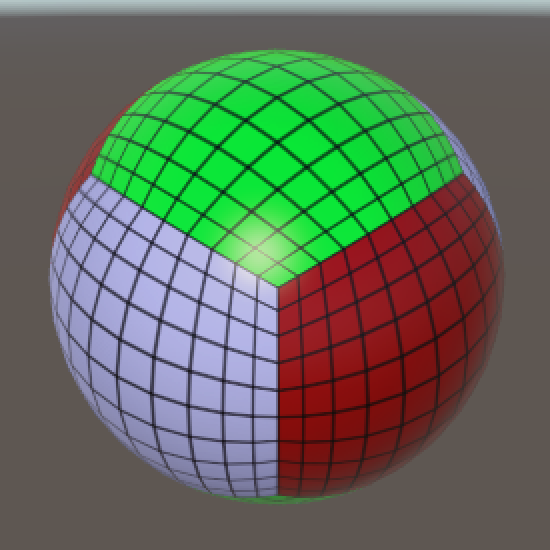
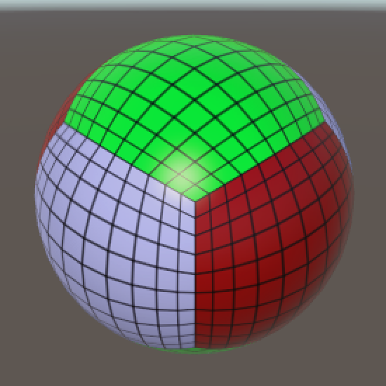

Cube Sphere
Better Roundness
- Turn a cube into a sphere.
- Visualize the mapping in Unity.
- Critically examine the conversion.
- Use math to come up with a better approach.
In this tutorial we'll create a sphere mesh based on a cube, then use mathematical reasoning to improve it.
This tutorial follows Rounded Cube. It has been made for Unity 5.0.1 and up.
Adapting the Rounded Cube
You have probably noticed that you can create a perfect sphere with a rounded cube. Make sure that it is of equal size in all three dimensions and set its roundness to half its size.
If all you want is a sphere, then the flexibility offered by the rounded cube only gets in the way. So let's create a separate component for it. Duplicate the RoundedCube script and rename it to CubeSphere. Then replace the three sizes with a single gridSize and remove the roundness field.
public class CubeSphere : MonoBehaviour {
public int gridSize;
// No more roundness.
private Mesh mesh;
private Vector3[] vertices;
private Vector3[] normals;
private Color32[] cubeUV;
…
private void Generate () {
GetComponent<MeshFilter>().mesh = mesh = new Mesh();
mesh.name = "Procedural Sphere";
CreateVertices();
CreateTriangles();
CreateColliders();
}
…
}
The removal of the roundness field will result in errors, because it is still used in some places. Let's first look at the creation of colliders.
We needed multiple box and capsule colliders to represent rounded cubes, but spheres only need a single sphere collider. This means that we can delete the AddBoxCollider and AddCapsuleCollider methods and reduce CreateColliders to a single line of code.
private void CreateColliders () {
gameObject.AddComponent<SphereCollider>();
}
Next is the placement of the vertices, which also used to depend on roundness.
We formed the corners of the rounded cube by normalizing a vector that pointed from the inside of the corner to somewhere on the original cube. When turned into a sphere, this is all we need to do, as the other cases degenerate.
It would also be convenient if our sphere was centered at its local origin. We haven't bothered to do this with our grid and rounded cube, but in this case it makes the sphere's creation simpler, so let's center it.
To create a unit sphere – a sphere with a radius of 1 unit – we need to normalize the vertices of a cube that is centered at the origin. For that cube to exactly contain the sphere, it needs to have edge length 2.
We can create the vertices of this cube inside SetVertex by dividing the raw coordinates by the grid size, doubling that, and then subtracting one.
public float radius = 1;
private void SetVertex (int i, int x, int y, int z) {
Vector3 v = new Vector3(x, y, z) * 2f / gridSize - Vector3.one;
normals[i] = v.normalized;
vertices[i] = normals[i];
cubeUV[i] = new Color32((byte)x, (byte)y, (byte)z, 0);
}
This produces a unit sphere, but you might want a different radius. So let's make that configurable.
public float radius = 1f;
private void SetVertex (int i, int x, int y, int z) {
Vector3 v = new Vector3(x, y, z) * 2f / gridSize - Vector3.one;
normals[i] = v.normalized;
vertices[i] = normals[i] * radius;
cubeUV[i] = new Color32((byte)x, (byte)y, (byte)z, 0);
}
By now all errors should be gone and we can put a cube sphere object in the scene, either from scratch or by replacing the component of a rounded cube object.
Investigating the Mapping
We have a way to create sphere meshes, but how good are they? Let's look at a sphere from multiple viewpoints. How uniform is the grid?
 

The size of grid cells varies quite a bit. The largest cells come from the middle of the cube faces. They are roughly four times as large as the smallest cells, which come from the cube corners.
To see why this is so, let's visualize the mapping from square to circle. We'll use a circle because that's easier to work with than a sphere. It's just a single slice of the problem.
We can create a visualization in Unity, with gizmos. We'll use a custom component with an OnDrawGizmosSelected method. It works like OnDrawGizmos, except that the gizmos will only be drawn when the object is selected. That way we can add a visualization object to the scene which will remain invisible unless we select it.
using UnityEngine;
public class CircleGizmo : MonoBehaviour {
private void OnDrawGizmosSelected () {
}
}
We start by showing the vertices on the square's edges with black spheres, at whatever resolution we like. Let's start with the top and bottom edges.
public int resolution = 10;
private void OnDrawGizmosSelected () {
float step = 2f / resolution;
for (int i = 0; i <= resolution; i++) {
ShowPoint(i * step - 1f, -1f);
ShowPoint(i * step - 1f, 1f);
}
}
private void ShowPoint (float x, float y) {
Vector2 square = new Vector2(x, y);
Gizmos.color = Color.black;
Gizmos.DrawSphere(square, 0.025f);
}
Complete the square by filling in the left and right edges. As the corners are already shown, we can skip them now.
private void OnDrawGizmosSelected () {
float step = 2f / resolution;
for (int i = 0; i <= resolution; i++) {
ShowPoint(i * step - 1f, -1f);
ShowPoint(i * step - 1f, 1f);
}
for (int i = 1; i < resolution; i++) {
ShowPoint(-1f, i * step - 1f);
ShowPoint(1f, i * step - 1f);
}
}
Next, for each point we will also show the corresponding circle vertex, using a white sphere. Then we show the relationship between these two vertices with a yellow line. And finally a gray line from the circle vertex to the center.
private void ShowPoint (float x, float y) {
Vector2 square = new Vector2(x, y);
Vector2 circle = square.normalized;
Gizmos.color = Color.black;
Gizmos.DrawSphere(square, 0.025f);
Gizmos.color = Color.white;
Gizmos.DrawSphere(circle, 0.025f);
Gizmos.color = Color.yellow;
Gizmos.DrawLine(square, circle);
Gizmos.color = Color.gray;
Gizmos.DrawLine(circle, Vector2.zero);
}
Now we can see how the mapping works. Normalization pulls the vertices straight to the center, until they reach the unit circle. Vertices that lie closer to the square's corners are pulled in more than vertices that lie closer to the main axes. Indeed, vertices that lie exactly on the main axes aren't moved at all, while vertices that lie exactly on the diagonals are moved by `sqrt(2)-1` units.
As all points that move are pulled straight towards the same point, they end up closer together. That's why cells that touch the diagonals are the smallest.
unitypackagePlaying with Math
By now we know why cells end up with different sizes. Can we do something about it? Maybe there is a different mapping that produces more uniform cells. If so, how do we find such a mapping?
This is really a mathematical problem, so let's start by describing our current mapping more formally. Once again we only concern ourselves with circles at the start, assuming that we can generalize to spheres later.
So we're mapping points on a square to points on a circle. As points are described with vectors, we're really mapping one vector to another.
`v_s -> v_c`
Specifically, our circle is the unit circle, which inscribes a square of edge length 2. So our mapping is simply the normalized version of the vector `v_s`.
`v_c = hat v_s`
Normalizing a vector is done by dividing it by its own length.
`hat v_s = v_s / ||v_s||`
How do you get the length of a 2D vector? It is composed of two coordinates.
`v_s = [[x],[y]]`
These coordinates define a right triangle, to which you can apply the Pythagorean theorem.
`||v_s||^2 = x^2+y^2`
The vector's length is simply the square root of that.
`||v_s|| = sqrt(||v_s||^2) = sqrt(x^2+y^2)`
Now we can write the mapping in its most explicit form.
`v_c = hat v_s = v_s / ||v_s|| = 1 / ||v_s|| [[x],[y]] = [[x/||v_s||],[y/||v_s||]] = [[x/sqrt(x^2+y^2)],[y/sqrt(x^2+y^2)]]`
That's nice, but can we actually prove that `v_c` defines a point on the unit circle? For it to do so, its length must be 1. So we must demonstrate that the following equality is true.
`||v_c|| = sqrt((x/sqrt(x^2+y^2))^2 + (y/sqrt(x^2+y^2))^2) = 1`
This is hard to work with, so let's square everything.
`||v_c||^2 = (x/sqrt(x^2+y^2))^2 + (y/sqrt(x^2+y^2))^2 = 1`
It is possible to simplify this until it becomes trivial.
`(x/sqrt(x^2+y^2))^2 + (y/sqrt(x^2+y^2))^2 = x^2/(x^2+y^2) + y^2/(x^2+y^2) = (x^2 + y^2)/(x^2+y^2)`
As the numerator and denominator of the final expression are equal, the result must be 1. That is, unless `x^2+y^2` ends up being zero, in which case the result is undefined. But we're only using points on our square's edges as input, which guarantees that one or both coordinates are either 1 or −1, which guarantees that `x^2+y^2>=1` so we won't get an undefined result.
Was this proof useful? Well, it shows us that there is a formula which yields 1 for each point on our square. This formula corresponds to a mapping from the square to the unit circle.
Can we find a different formula that does the same thing? If so, there must be a different mapping too! So let's reverse the process. Come up with a formula that yields 1 for every point on our square.
What would such a function look like, if we try to keep it as simple as possible? We know that at least one of the coordinates is always either −1 or 1. So if we square both coordinates, we get a least a single 1. Alternatively, we could turn them into potential zeros, by using `1-x^2` and `1-y^2`. As at least one of these is always zero, if we multiply them together we are guaranteed to get zero. This gives us our formula.
`1-(1-x^2)(1-y^2)`
This formula can be rewritten to a simpler form.
`1-(1-x^2)(1-y^2) = x^2 + y^2 - x^2y^2`
Now we have a new way of defining the square length of `v_c`.
`||v_c||^2 = x^2 + y^2 - x^2y^2`
Let's rearrange the right side of this equation so it is of the form `a + b`. The `x^2` and `y^2` parts are obvious, but what to do with the `x^2y^2` part? It makes sense to keep things as symmetrical as possible, so split it equally.
`||v_c||^2 = (x^2 - (x^2y^2)/2) + (y^2 - (x^2y^2)/2)`
We can now split this into two coordinates, `x_c^2 = x^2 - (x^2y^2)/2` and `y_c^2 = y^2 - (x^2y^2)/2`. We could split it differently, but this way produces the best possible distribution of points on the circle. Now we're just a square root away from the final vector.
`v_c = [[x sqrt(1 - y^2/2)],[y sqrt(1 - x^2/2)]]`
The vector we just found gives us a new mapping from the square to the circle. Let's try it out in ShowPoint!
Vector2 circle; circle.x = square.x * Mathf.Sqrt(1f - square.y * square.y * 0.5f); circle.y = square.y * Mathf.Sqrt(1f - square.x * square.x * 0.5f);
It turns out that this mapping pushes points away from the diagonals and towards the axes. They are now closest together near the axes. Fortunately, the distance between adjacent points is more uniform than what we got with our first approach, so it is an improvement.
unitypackageAdjusting the Mapping
We have a new mapping from square to circle, but what about going from cube to sphere? Can we use the same approach? Yes, but we need to incorporate a third coordinate, just like the two we already have. That way we get the square length of vectors pointing to points on the unit sphere.
`||v_o||^2 = 1-(1-x^2)(1-y^2)(1-z^2)`
Indeed, this works for any amount of coordinates, so we could map from any hypercube to any hypersphere of the same dimension. The expanded formula just gets more complex.
`||v_o||^2 = x^2 + y^2 + z^2 - x^2y^2 - x^2z^2 - y^2z^2 + x^2y^2z^2`
This formula for three dimensions has a new `x^2y^2z^2` part that is linked to all three coordinates. Like before, we equally split it between the coordinates of the final vector. We end up with more complex formulas, but the concept remains the same. Here's `x_o^2`, the others are similar.
`x_o^2 = x^2 - (x^2y^2)/2 - (x^2z^2)/2 + (x^2y^2z^2)/3`
Once again the final mapping is only a square root away.
`v_o = [[x sqrt(1 - y^2/2 - z^2/2 + (y^2z^2)/3)],[y sqrt(1 - x^2/2 - z^2/2 + (x^2z^2)/3)],[z sqrt(1 - x^2/2 - y^2/2 + (x^2y^2)/3)]]`
Let's use that in SetVertex and see what it looks like!
private void SetVertex (int i, int x, int y, int z) {
Vector3 v = new Vector3(x, y, z) * 2f / gridSize - Vector3.one;
float x2 = v.x * v.x;
float y2 = v.y * v.y;
float z2 = v.z * v.z;
Vector3 s;
s.x = v.x * Mathf.Sqrt(1f - y2 / 2f - z2 / 2f + y2 * z2 / 3f);
s.y = v.y * Mathf.Sqrt(1f - x2 / 2f - z2 / 2f + x2 * z2 / 3f);
s.z = v.z * Mathf.Sqrt(1f - x2 / 2f - y2 / 2f + x2 * y2 / 3f);
normals[i] = s;
vertices[i] = normals[i] * radius;
cubeUV[i] = new Color32((byte)x, (byte)y, (byte)z, 0);
}
Grid cells still get more distorted the closer they get to the diagonals, there's no way around that. But this new mapping produces cells with much more uniform size than the normalization approach. Cells at the axes and cube corners appear to have roughly the same size now. That's much better than what we started with! The largest cells are now those along the cube's edges. Those used to get squashed, but now they are stretched.
If you now feel like giving this nice sphere a good squeeze, then you can move on to the Mesh Deformation tutorial.
unitypackage PDF